Cardápio da casa
Petiscos, pratos, bebidas, drinks e sobremesas.
Ver cardápiosMoema · São Paulo
Boa comida, música ao vivo, espaço kids e mesas que viram histórias. Um botequim feito para reunir amigos, famílias e encontros que pedem mais tempo à mesa.
Gastronomia
Tem crocância para dividir, carne chegando à mesa, drinks que puxam conversa e sobremesa para fazer o encontro durar mais.
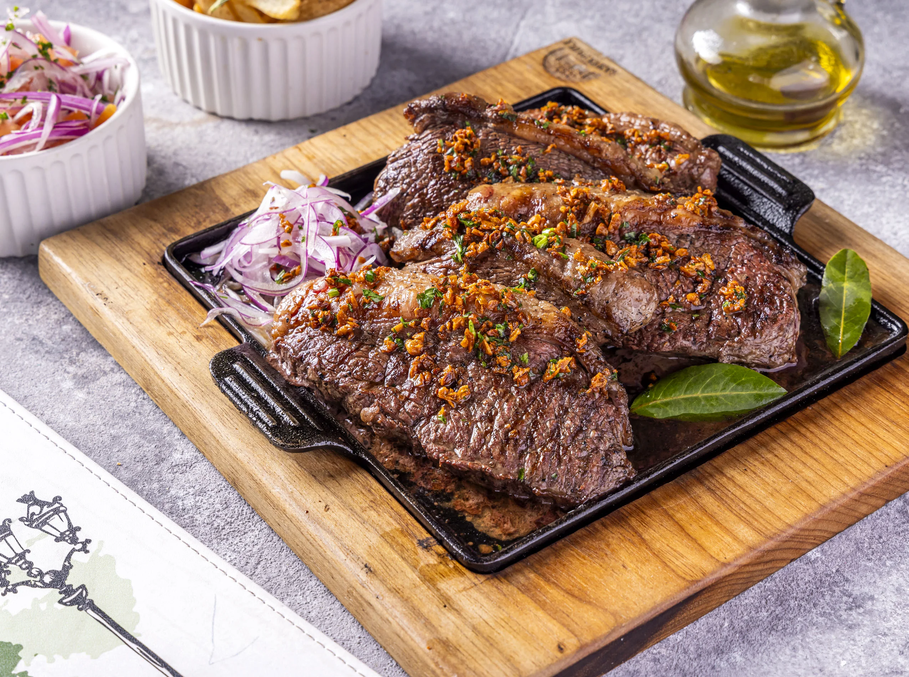
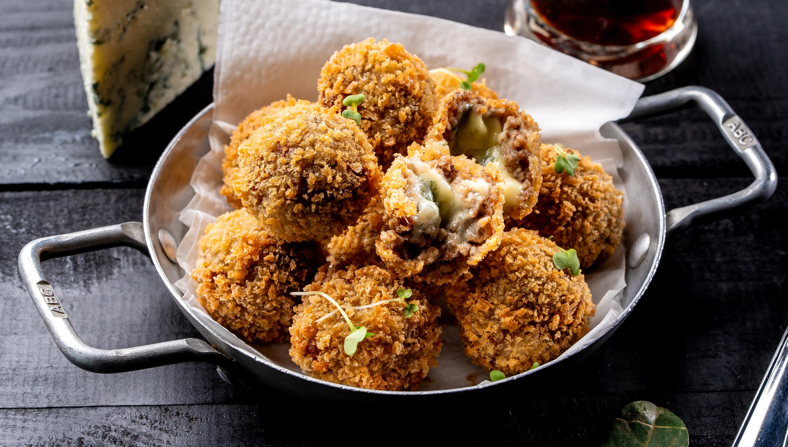
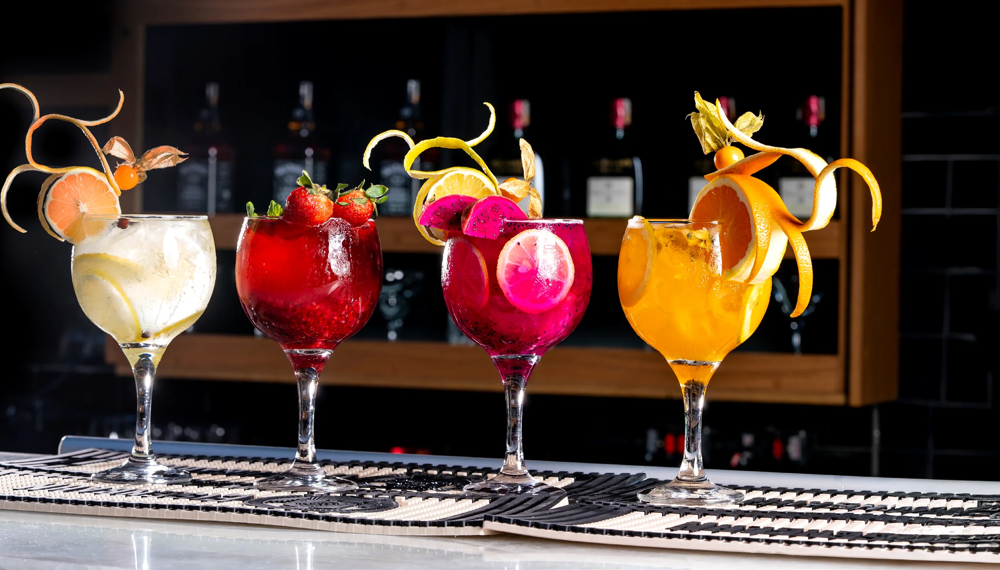
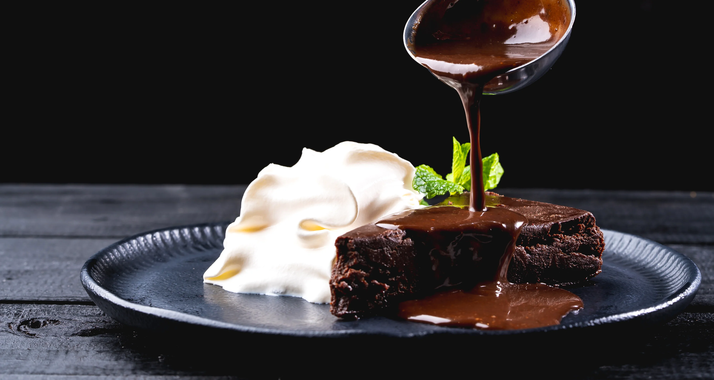
Botequim Paulista
Da primeira conversa ao último refrão, o Botequim Paulista reúne o jeito paulistano de viver bem: mesa cheia, gastronomia de boteco, música e aquela vontade de esticar o encontro mais um pouco.
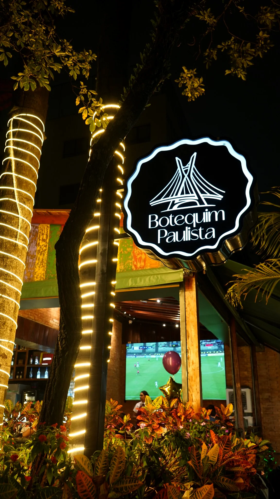
O seu ritmo, a nossa mesa
Petiscos, pratos para compartilhar, sobremesas e escolhas para transformar qualquer parada em programa.
Uma mesa para o pós-trabalho, o aniversário, o almoço em família ou aquele encontro que não precisa de motivo.
De terça a domingo, a música ao vivo faz parte da experiência e acompanha a casa em diferentes momentos.
Espaço kids
O Botequim Paulista também recebe famílias com um espaço kids pensado para as crianças aproveitarem com mais liberdade, enquanto os adultos curtem a experiência da casa.
É mais conforto para almoços em família, encontros de fim de semana e comemorações com quem você gosta.
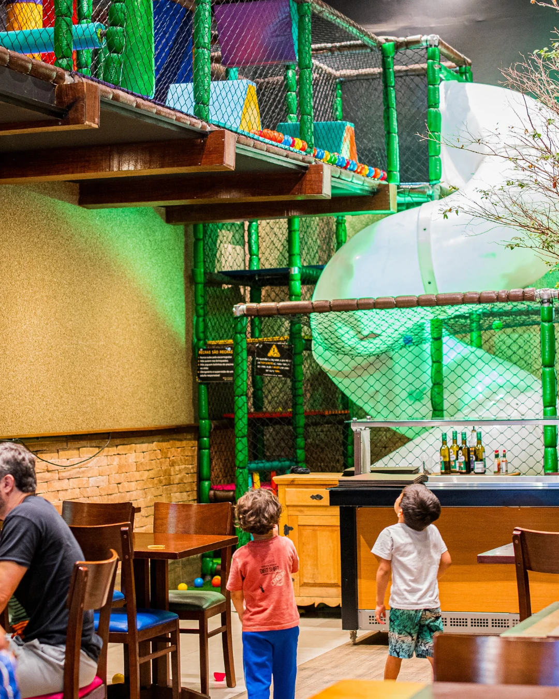
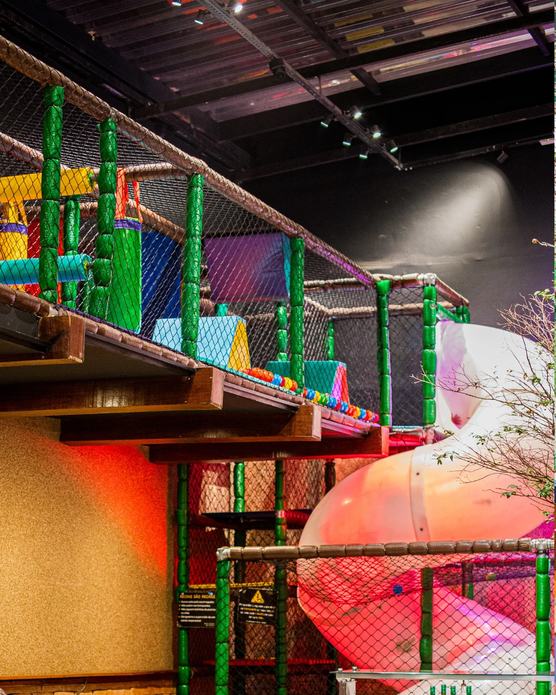
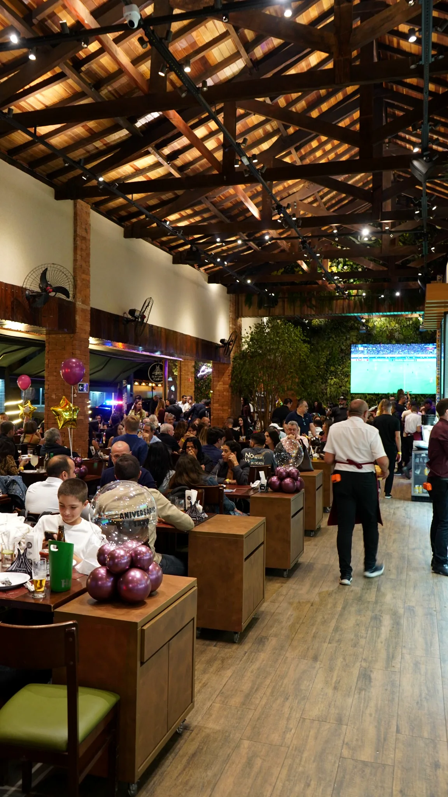
São Paulo acontece por aqui.Conexões & Conquistas
Tem encontro que vira tradição. Tem comemoração que pede música. Tem conversa que só precisava de mais uma rodada e um bom lugar para acontecer.
É essa mistura de gastronomia, movimento e convivência que faz do Botequim Paulista um ponto de encontro de São Paulo.
Venha encontrar a sua mesa ↘Moema, São Paulo
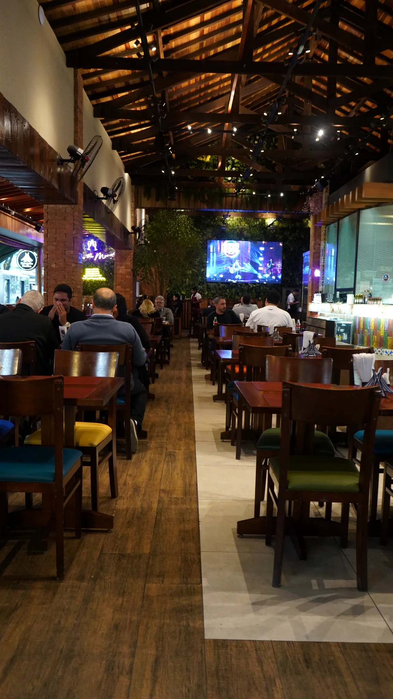
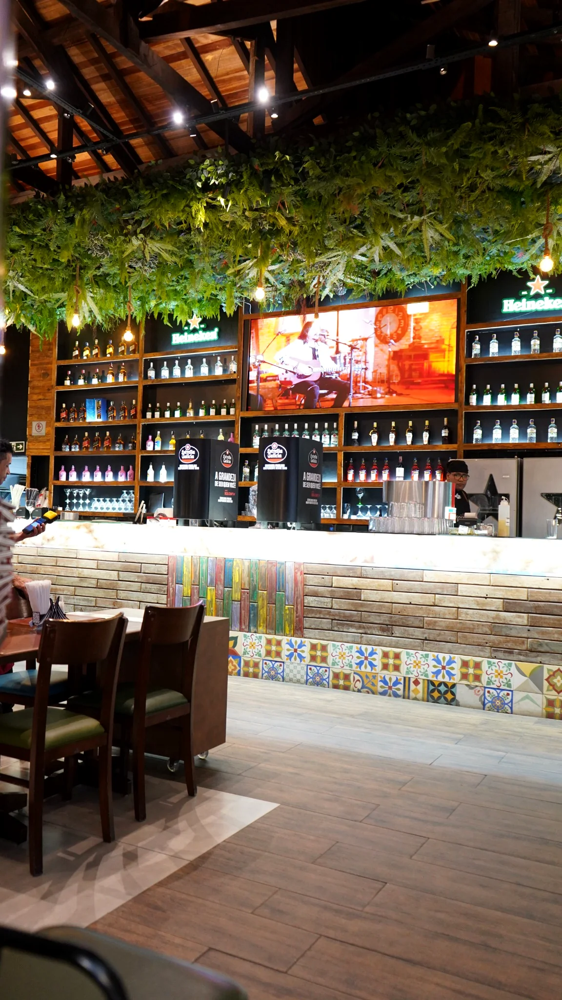